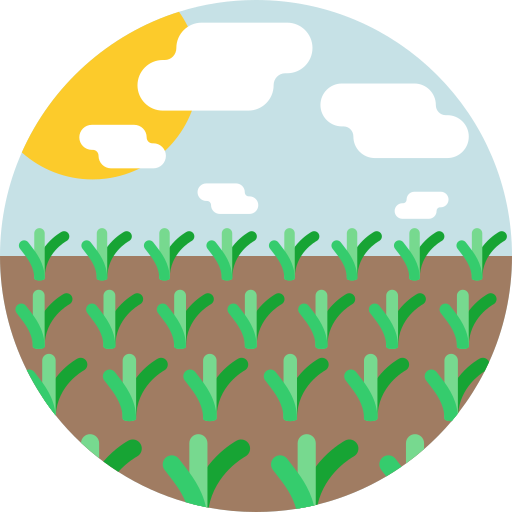

My Portfolio
FourthWall
At FourthWall I've been working on creating games for web and mobile as lead designer while trying to leverage our company's advanced facial and hand tracking software.
Fibster
Fibster is a social deduction game where every player is lying.
Fibster is a social deduction game inspired by Dixit and Among Us but making it more proactive for all players by making all of them lie. In Fibster each round the players are given a theme (adventure, music, pirates) and one of the players is given a card with an image that matches said theme, everyone else is given a blank card. Players then take turns being interrogated by the rest of the players. Players with blank cards need to pretend to have an image and vice versa. At the end players vote on who they think had the image card.
I designed the entire experience from intial concept to MVP and worked with my colleague who built the website you can find it here.
SNU
SNU is a 1v1 game, essentially a tron like capture the flag, where two balls fight in a dome. Players control their ball by moving their hand and have a number of power ups (freeze, invert controls) to sabotage their opponen.
I designed this game from the intial design concept to MVP. I thought capture the flag was one of the best formats for a scrappy battle arena game.
Personal
These are my personal projects.
Articles

I've been reaching out to interview different developers on their games and what we can learn from them. I wrote an article about toxicity in games interviewed Mikkel Pederson the Co-Founder and Lead Designer of Ghost Ship Games (Deep Rock Galactic) about their systems of reducing toxicity. I've also just finished an interview with Chris Bourassa Co-Founder and Creative Director of Red Hook Games (Darkest Dungeon) about the unique challenge they faced when making a sequel that was of a different genre. I'll be uploading the article soon.
I'm Happy But

In this game I really want to connect the feeling of failure in a videogame to the feeling of failure of completing everyday tasks as a result of depression. The player has everyday tasks to complete, represented by minigames. There are many scripted, yet surprising failures in these minigames and as the player fails he's laughed at by his personified depression. I used UE4 and C++ for this project.
Sleepy Farmer
Sleepy Farmer is a tile base resource management game. I started working on it as a way to practice managing an economy in game. To not make it the same monotonous farmville I added a twist. The player only has a few days to decide how the farm will be run, then they fall asleep for the rest of the season. They're then forced to watch the consequences of their decisions as the farm plays out and various positive or negative events occur. I used UE4 and C++ for this project. Here's a short 2 page design doc on the project.
Vega
As a part of a final year module I led a team of 5 people to work on an educational videogame for IBM. I thought of a hex-based, single player, 4X game with a focus on the tech tree. As players progressed their civilisation they could learn about the real physics behind tech tree advancements and answer questions related to them or learn the basics of more complex theories. We also had random events with educational elements to try and add a sense of wonder to the learning process and discuss a wider range of topics. Here's a page from a blog we made while doing the project.
Frogger Clone
A very simple frogger clone, I played a little with the varying the speed of different lanes to add to difficulty.
Jumpman who is a man and not a block
My first ever game. A simple platformer I made following a course piece by piece. I messed with moving platforms and hiding "gems" across levels. I also made a final level where I went a tad overboard and tried to make it as hard as possible mainly through the use of fast moving obstacles. The last version of the game is in my google drive here.